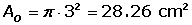
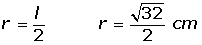

Circle Word Problems
1Anne is riding a horse which is tied to a pole with a 3.5 m piece of rope and her friend Laura is riding a donkey which is 2 m from the same center point. Calculate the distance travelled by each when they have rotated 50 times around the centre.
2The rope that attaches a swing to a tree is 1.8 m long and the maximum difference between trajectories is an angle of 146°. Calculate the maximum distance travelled by the seat of the swing when the swing angle is described as the maximum.
3Find the area of a circular sector whose chord is the side of the square inscribed in a circle with a 4 cm radius.
4Calculate the shaded area, knowing that the side of the outer square is 6 cm and the radius of the circle is 3 cm.

5In a circular park with a radius of 250 m there are 7 lamps whose bases are circles with a radius of 1 m. The entire area of the park has grass with the exception of the bases for the lamps. Calculate the lawn area.
6Two radii (plural for radius) OA and OB form an angle of 60° for two concentric circles with 8 and 5 cm radii. Calculate the area of the circular trapezoid formed by the radii and concentric circles.
7A circular fountain of 5 m radius lies alone in the centre of a circular park of 700 m radius. Calculate the total walking area available to pedestrians visiting the park.
8A central angle of 60° is plotted on a circle with a 4 cm radius. Calculate the area of the circular segment between the chord joining the ends of the two radii and its corresponding arc.
9A chord of 48 cm is 7 cm from the center of a circle. Calculate the area of the circle.
10Calculate the area enclosed by the inscribed and circumscribed circles to a square with a diagonal of 8 m in length.
1
Anne is riding a horse which is tied to a pole with a 3.5 m piece of rope and her friend Laura is riding a donkey which is 2 m from the same center point. Calculate the distance travelled by each when they have rotated 50 times around the centre.

2
The rope that attaches a swing to a tree is 1.8 m long and the maximum difference between trajectories is an angle of 146°. Calculate the maximum distance travelled by the seat of the swing when the swing angle is described as the maximum.

3
Find the area of a circular sector whose chord is the side of the square inscribed in a circle with a 4 cm radius.
4
Calculate the shaded area, knowing that the side of the outer square is 6 cm and the radius of the circle is 3 cm.


5
In a circular park with a radius of 250 m there are 7 lamps whose bases are circles with a radius of 1 m. The entire area of the park has grass with the exception of the bases for the lamps. Calculate the lawn area.

6
Two radii (plural for radius) OA and OB form an angle of 60° for two concentric circles with 8 and 5 cm radii. Calculate the area of the circular trapezoid formed by the radii and concentric circles.

7
A circular fountain of 5 m radius lies alone in the centre of a circular park of 700 m radius. Calculate the total walking area available to pedestrians visiting the park.

8
A central angle of 60° is plotted on a circle with a 4 cm radius. Calculate the area of the circular segment between the chord joining the ends of the two radii and its corresponding arc.
9
A chord of 48 cm is 7 cm from the center of a circle. Calculate the area of the circle.


10
Calculate the area enclosed by the inscribed and circumscribed circles to a square with a diagonal of 8 m in length.


